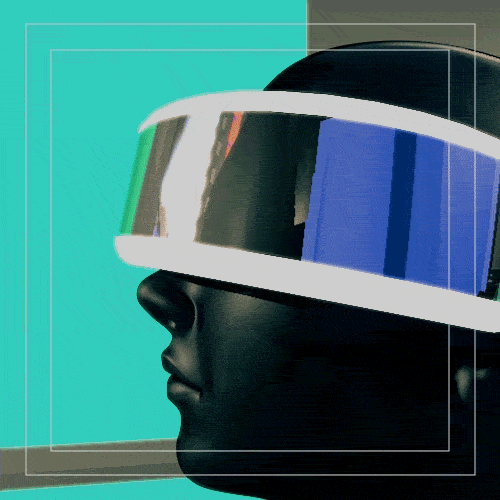
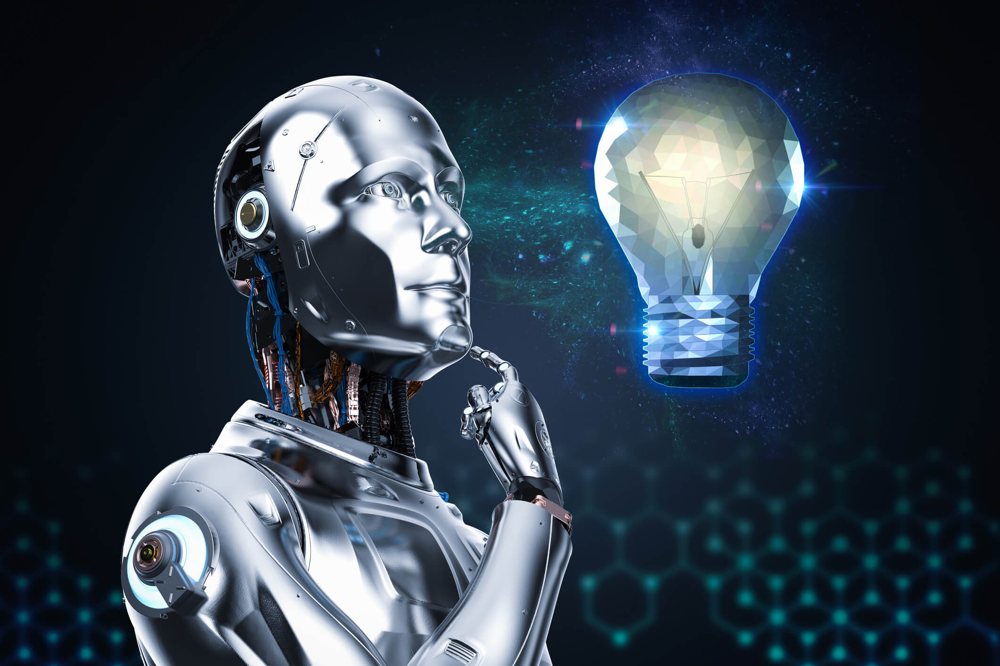
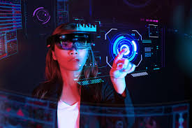

O Futuro da Informática

O mercado de tecnologia da informação (TI) é um dos setores que mais crescem e se inovam no mundo.
Abaixo algumas das tendências mais importantes que estão moldando o futuro da informática.
Na verdade, esse futuro já chegou! Já vemos essas tecnologias em ação...
|

|

|
|
Inteligência Artifical |
Computação em Nuvem |
Internet das Coisas |
|
|

|
Segurança Cibernética |
Realidade Aumentada e Virtual |